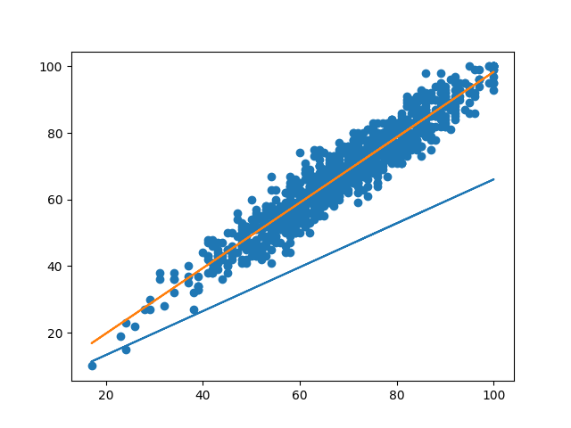

Linear Regression
Linear regression is the process of fitting a linear function to a linearly related dataset. By doing this, we can predict unknown values of y given a new x. When first designing our learning algorithm we need to determine how to represent the hypothesis h, which is the prediction function. In Linear Regression we can represent the hypothesis with the following equation:
$$h(x) = \theta_0 + \theta_1x$$
The goal of our learning algorithm is to minimize the cost function. In this case, it can be represented with the following equation:
$$J(\theta) = \frac{1}{2} \sum _{i=1}^m (h(x^{(i)}) - y^{(i)})^2$$
This equation represents the sum of all the diferences between the predicted values h(x) and the actual values y across the entire dataset. We can then adjust theta to reduce the output of the function. The half constant is only present to make the math easier later on.
How can we optimize the cost function?
To optimize the loss function we want to change our theta values so that the function is minimized. This can be done through the use of gradient descent. Generally Gradient Descent takes a step in the steepest direction downward each iteration, hopefully ending in the lowest point. We find which direction to step by taking the partial derivative of the loss function with respect to theta one and theta two.
We can formally define our gradient descent function as follows:
$$(\theta) j := \theta j - \alpha \sum{i=1}^m (h(x^{(i)})-y^{(i)})*xj^{(i)}){(j=1...n)}$$
where the equation below is the partial derivative of J(theta) with respect to theta j $$\frac{\partial J(\theta)}{\partial \theta_j} = (h(x)-y)*x_j$$ we repeat this update of theta j until convergence. If our learning rate of alpha is too large me may overshoot the minimum. On the other hand, if it is too small, convergence will be very slow.
This is known as batch gradient descent which is great in the case of smaller data sets but falls short when used with large ones.
Another option when using large datasets would be to use stochastic gradient descent. Instead of iterating over the loss function for all the elements in the set we instead only use one example and iterate over that example each step in the process. which would give us the following equation:
$$(\theta_j := \theta_j - \alpha(h(x^{(i)})-y^{(i)})*xj^{(i)}){(j=1...n)}$$
The flaw of this method is that it will never truly converge, leaving us with a less than optimal hypothesis. But this is the more common method just because of how slow batch Gradient Descent is in practice. Using stochastic and also decreasing the learning rate with each iteration also works well because it will bounce around a smaller area in the end, making for a more accurate result.
Implementing these concepts into python
The first step I took when implementing these principles into python was to define linear model class to hold my regressor's funtionality and parameters.
class linear_model:
training_points: np.array
m: float = 0.0
b: float = 0.0
learning_rate: float = 0.01
def __init__(self, data, learning_rate = 0.0001):
self.m = random.random()
self.training_points = data
self.b = random.random()
self.learning_rate = learning_rate
My next step was to define my gradient descent function. m and b being theta theta one and zero
def fit_model(self, epochs: int = 1):
for i in range(epochs):
print(self.m, self.b, self.mse())
new_b = self.b - self.learning_rate * self.b_grad()
new_m = self.m - self.learning_rate * self.m_grad()
self.b = new_b
self.m = new_m
Finally, all we have to do is to run these function to train our algorithm.
import matplotlib.pyplot as plt
import numpy as np
import pandas as pd
import regressors
student_data = pd.read_csv('datasets/StudentsPerformance.csv')
x = student_data["reading score"].to_numpy()
y = student_data["writing score"].to_numpy()
data = np.stack((x, y), axis=1)
linear_model = regressors.linear_model(data, 0.0001)
plt.scatter(x, y)
plt.plot(x, linear_model.predict_range(x))
linear_model.fit_model()
plt.plot(x, linear_model.predict_range(x))
plt.show()
This code gives us the following image showing the fitted line in orange and the starting line in blue.
